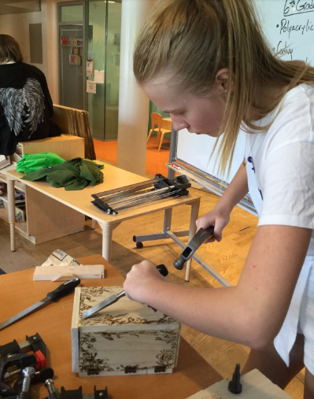

For the Spring 2017 Semester STEAM at The New School hosted the STEAM Challenge in order to honor our chapter’s mission: elevate the work of our student body, provide exposure to innovative career paths, and foster a spirit of collaboration across the arts, and technological fields of study.
The challenge invited the New School community to submit work and projects that explored the integration of STEAM disciplines (Science, Technology, Engineering, Art, and Mathematics) to showcase and promote our community efforts to advocate for the value of the arts in education.
Submissions were posted on our STEAM's Facebook page promoting a space for interaction within our student body and to further foster collaborative relationships within the NYC community. The objective was to create an opportunity to spark informal conversations on matters that are of interest to TNS community. This could possibily foster collaboration for future creations, by sharing research, findings and insights.
The Office of Student Development and Activities (OSDA) at The New School kindly supported our efforts to reach out to the students, undergraduates and graduates, alike by including our call in their weekly newsletter. The finalists got to showcase their work with a broader network, that includes our fellow STEAM chapters at Brown. MIT. RISD. Yale. BU. Rutgers. Harvard, by being included in the sixth issue of the STEAM Catalogue.
TNS community is renowned by having a student body coming from diverse international backgrounds. The STEAM Challenge was an invitation for those who wanted to examine unexplored (or underexplored) intersections of the aforementioned disciplines that make up the STEAM acronym.
The students from the Integrated Design BFA and the Design & Technology MFA were the most responsive to the challenge. The submissions proved to be committed research projects apt for implementation and developed following the basics of the design process. These considered the values and beliefs that underlie a human-centered approach to explore problems of high complexity.
The areas of interest included: sustainable design, immersive built environments, urban design, alternative mobility, experiential art, physical computing, surveillance design, biometric data, speculative design, food conservation, human sensory analysis, food memories, service innovation, design thinking, systems modelling. (see pictures below for the details of the STEAM CHALLENGE finalists.
For the next edition of the STEAM Challenge we’re considering alternative and effective ways to reach a larger audience. Although we like to believe that TNS community is interested in this kind of initiatives, we’ve learned that newsletters are overwhelming and do not meet its end. Something similar happens with social media networks, facebook, instagram and snapchat, especially because they seem to saturate the students’ interest.
Therefore, for the next academic year we’re looking to develop a series of meetups where we get to explore our options by getting not only students, but also faculty on board, including the resources available at the recently launched Making Center, to foster a true collaborative process that celebrates the work we do at The New School.
During the past school year, I was a volunteer in Rob Gilson’s STEAM Class at The Blue School. The purpose of this class is to introduce a problem-solving mindset to children in their early stages of learning. I was lucky to join an amazing group of six graders on the path of learning through collaboration with the help of STEAM as the core of their Curriculum. The Blue School designed for this class a space with all kinds of tools, raw materials and anything needed to build your imagined solution to a problem. In this space, the students were free to utilize the tools and materials necessary to continue their ongoing projects.
I was surprised to see the flexibility and dynamism by which this space is ruled. Even though the students would be considered young to use some of the power tools in this space, Professor Gilson will give them the resources and confidence to utilize them. It is almost tangible the way the students start gaining creative freedom and ownership of their projects as the year passes by.
The STEAM Class Curriculum is layered in such way that the skills learned by the children will build up from one assignment to the next. The course begins with each student weaving their own STEAM Journal, which was a space for them to save ideas or sketch possible new projects. Then, we moved onto hand sewing a pouch. In some clear spaces between projects, the students had the option to code using a very fun program developed by the MIT.
By the end of the year, the students used the design process: research, ideate, prototype, create, reflect. The project began with the students doing desk research around boxes, what are they for? What shapes, materials or processes were entailed? Who was the user?
After that research, the students had to develop a concept for their box, defining the user and its main purpose. They continued the process by creating a 1:1 size paper prototype of their box which helped them visualize the geometry of their boxes. As well as possible implications they couldn’t see during the ideation process.

The paper prototype was also intended to help them quantify the amount of wood they were going to need. Finally, they used all the skills they gathered during the year to build a completely functional box. I was wildly impressed with the outcomes of this group of creative students. The forms of the boxes varied from complex pentagons to intricate designs and functionality focused designs.
I always found it lame and forced when teachers told us that ‘the most important learnings are the ones they got from us…’ Believe me when I tell you, sharing this experience with them was extremely nourishing. I learned from them that the outcome is not as important. Also that help means not giving your friend the answer but finding it together. In the end, the greatest thing I learned is to trust the process.
“Simply, Blue School believes fiercely in the undeniable capacity of children, and our faculty works alongside our students to unleash their powers of discovery, investigation, and creativity. Spanning the foundational first decade of life, the Blue School education provides for a rich and unique range of integrated academic, social, and creative experiences. Blue School nurtures a fertile imagination, a keen intellect, a big heart and an insatiable passion for learning.” – Allison Gaines Pell, Head of The Blue School